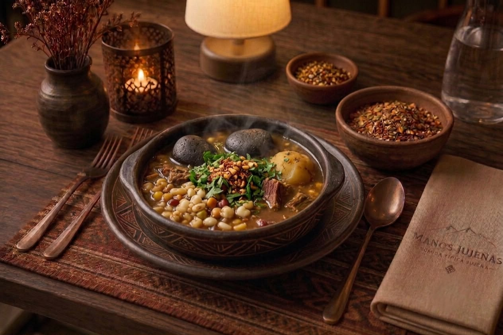

Platos Regionales

Locro Jujeño
Guiso espeso y reconfortante de maíz, porotos y carne, cocinado a fuego lento con el sabor profundo del norte.
$ 5.800

Picante de Llama con Quinoa
Tierna carne de llama en salsa especiada, acompañada de quinoa andina cocida a la perfección.
$ 7.200

Lomo de Llama
Corte premium de llama a la plancha, jugoso y suave, con guarnición de papas andinas y chimichurri de hierbas locales.
$ 8.500

Carapurca
Estofado ancestral de papa deshidratada con carne, una receta de raíz prehispánica que sobrevivió el paso del tiempo.
$ 6.400

Picante de Pollo
Pollo de campo en salsa de ají molido y especias norteñas, acompañado de quinoa y papas norteñas.
$ 5.500

Asado de Llama
Costillar de llama asado lentamente sobre brasas, con el ahumado característico de la Puna y chimichurri de la casa.
$ 9.000